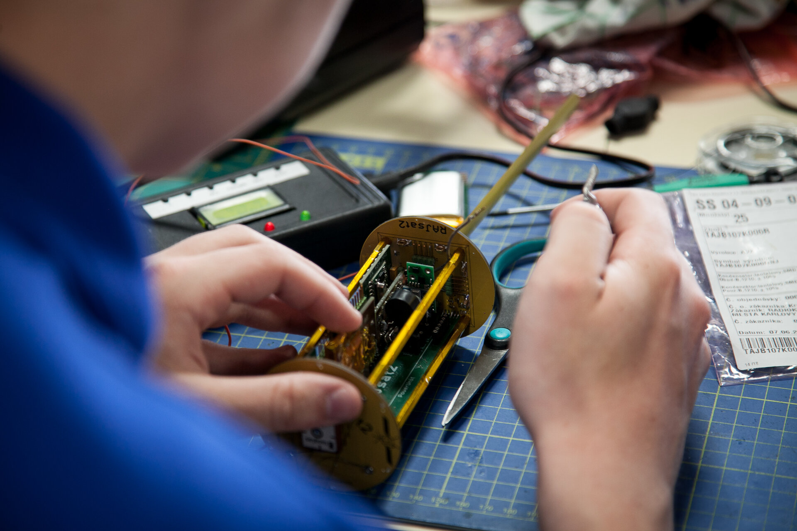
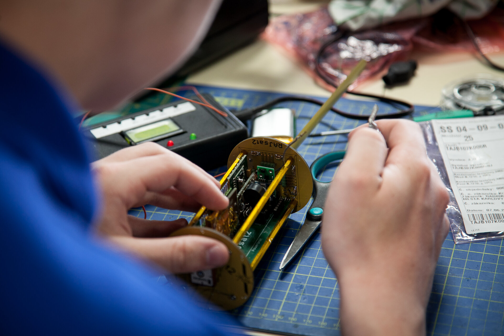
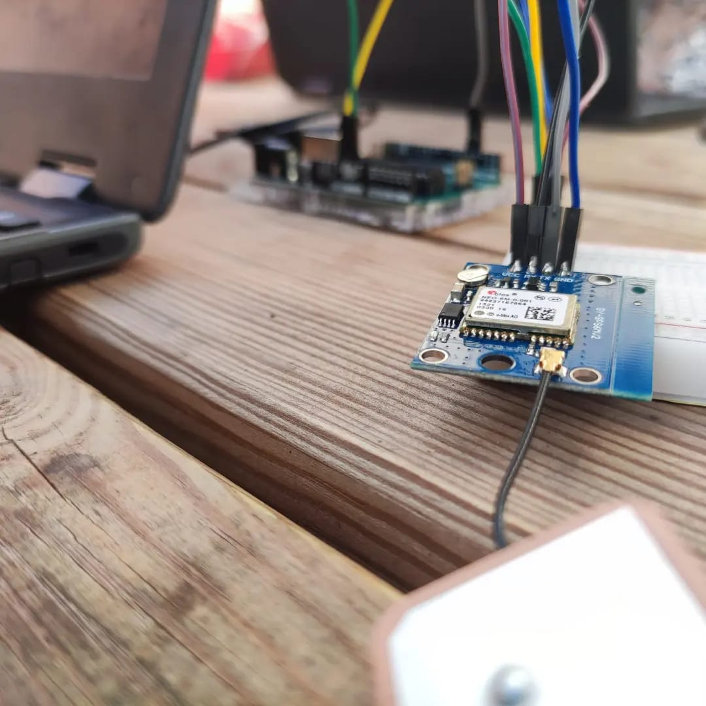
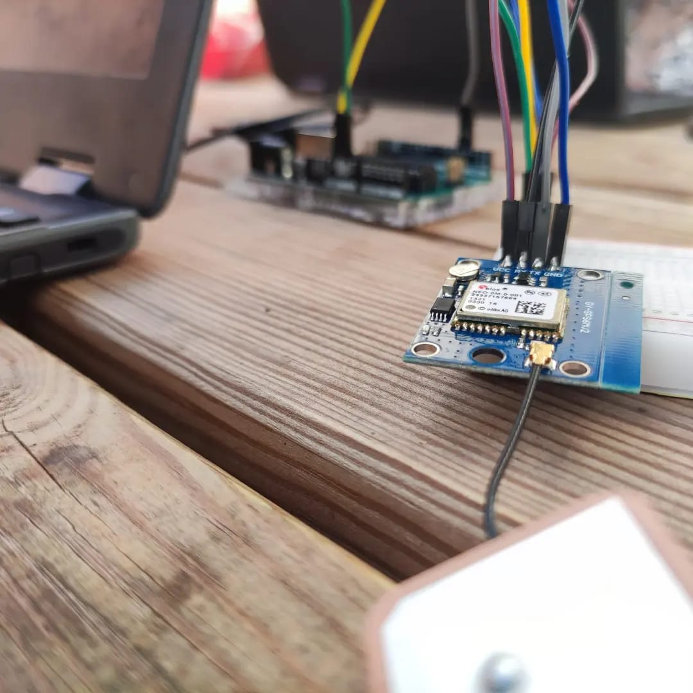

CanSat: Our latest project
The CanSat project is a remarkable educational initiative that provides a hands-on experience for students to learn about aerospace and technology. Through the design, construction, and launch of a CanSat, students have the opportunity to apply theoretical concepts learned in the classroom to real-world scenarios. Moreover, the CanSat project encourages teamwork, critical thinking, and problem-solving skills, as well as fostering creativity and innovation. By working collaboratively to overcome obstacles and challenges, students gain valuable experience in communication, project management, and leadership. The CanSat project also provides a glimpse into the world of space exploration and the importance of space technology in our daily lives. It inspires students to pursue careers in STEM fields and promotes scientific literacy and awareness.
And as according with the European Space Agency: "A CanSat is a simulation of a real satellite, integrated within the volume and shape of a soft drink can. The challenge for the students is to fit all the major subsystems found in a satellite, such as power, sensors and a communication system, into this minimal volume. The CanSat is then launched to an altitude of a few hundred metres by a rocket or dropped from a platform or captive balloon and its mission begins: to carry out a scientific experiment and achieve a safe landing."
The secondary goal of our own project is to use a satellite equipped with various sensors, one of which is to verify if exoplanets have a strong enough magnetic field to repel space radiation. In addition, to live and breathe cleanly or to know what is necessary for living, it is very important to know the qualities of the air. For this reason, we have decided to implement two air quality sensors, one to measure the air in general: ozone, CO₂, among other atmospheric compounds; and the other to measure particle pollution (PM), which can cause various respiratory problems. These particles can be found in volcanic gas emissions or in the combustion of raw materials. The goal is to obtain valuable data to help determine if these exoplanets could sustain life for possible space habitation.
This project demands large amounts of our weekly effort and time, apart from the tight schedule of being in second year of high school, but we greatly enjoy the realization and experience obtained thanks to this project. For all of this, we estimate, thanks to our daily organization, that the average hours invested in the project are about 10 per week.
Launch day
The Monday 24th of April of 2023, the regional CanSat Project's competition of the Balearic Islands took place, in which we competed against a total of 24 teams.
In the morning, the relevant tests were carried out at the Son Albertí airfield to see the operation of the CanSats, where our CanSat had the opportunity to be launched with the rocket and this test the parachute. Although we had some problems with data transmission, the parachute did its job and made a successful landing.
In the afternoon, we had the presentation at the University of the Balearic Islands, where we presented our project development and its results in front of the judges. Although we did not make it to the final, we are very proud with our work and grateful for the experience we had during these months and during the competition day.
 

 
